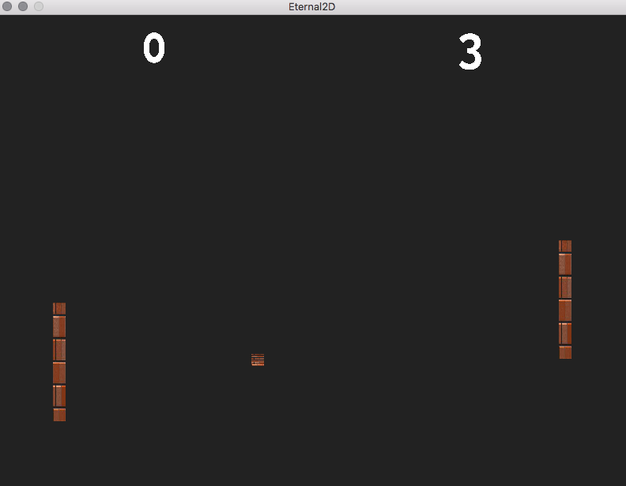
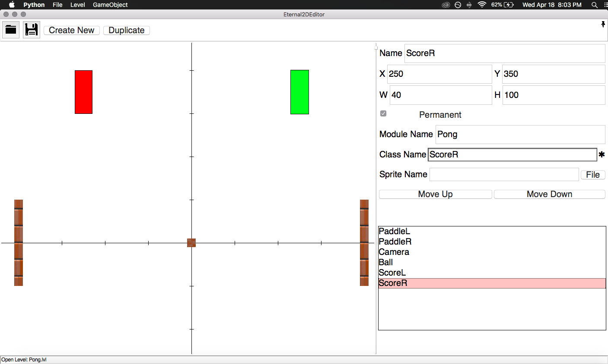
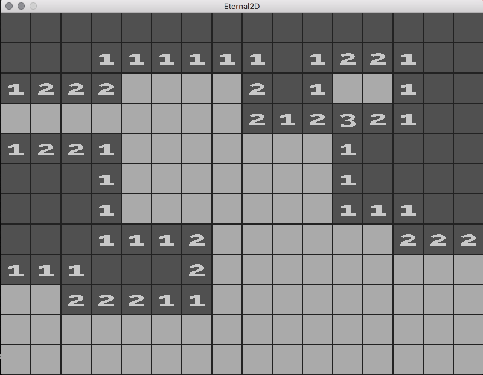

|
Eternal2D
Eternal2D
|
  
The Eternal2D engine is a component-based 2D game engine for Mac and Linux written in C++ that includes support for Python scripting. It was written from scratch for CS4850 except for the Physics engine, Box2D.
Everything you need to run the Eternal2D engine is in the Eternal2D directory. If you wish to recompile the engine for yourself, you can do so using the Makefile and source code provided to compile the source code and ThirdParty libraries into the Eternal2D directory.
Run make to rebuild the engine itself, or make editor to rebuild the C++ level serialization modules used by the Eternal2D Editor.
If you have completed the above steps or do not wish to recompile, simply launch the executable located at <yourplatform>/eternal2d. The game's levels will be loaded from Assets/Levels in the order specified by the Config/levels.txt file. You can provide a different filename within the Config directory to use as the level list by passing it as a command line argument when launching the engine.
The Eternal2DEditor was built in Python3 using Pillow and appJar. The appJar library is included with Eternal2D.
To use the editor, you must first install python (version 3.5 or above).
Next, you must install pillow for python3. To do this, you can run sudo pip3 install pillow in a terminal.
If this fails try sudo -H pip3 install pillow or install manually.
Finally, use python3 to run the python executable at /Eternal2D/Editor/eternal2Deditor.py.
When you open the editor, you will be presented with a blank canvas and an empty detail panel. You can drag the panels to your preferred size and drap the canvas around until the origin is where you prefer.
You can open an existing level file with File>Open or the folder icon.
You can change the name of the open level with File>ChangeLevelName. The default level name is temp.lvl.
You can save your level with File>Save or the save icon. The editor will use the current name as the file, so make sure to change it first if you don't want to save it at the defailt location.
You can edit the level list configuration with Level>Edit Level Order.
You can launch your game using Level>Play.
levels.txt. If you wish to use a different, or more than one, level list, you will need to set them up manually.You can create new GameObjects by clicking the "Create New" button, or using GameObject>Create New GameObject.
You can select an existing object by clicking it in the canvas or double-clicking it in the list of objects.
You can edit an existing object by selecting it, and editing the fields in the inspector panel.
.py. The script should be placed in Assets/Scripts/core.ScriptBaseAssets/Sprites/You can use the "Move Up" and "Move Down" buttons to move the selected object up and down in the list.
You can duplicate an existing object and all of its attributes by selecting it, and clicking the "Duplicate" button, or by with GameObject>Duplicate GameObject
If the Module Name is set correctly, you can open the script for the currently selected GameObject with GameObject>Open GameObject Script
You can import the following modules (all lowercase) into your python scripts. Scripts should be placed in the Assets/Scipts directory.
r, g, b, a fieldsx, y, w, h fieldsx, y fieldsCamera, Button, Physics, or RenderAssets/Sprites/ directoryAssets/Sounds/Config/lang.txt file specifies the locale file to use from Assets/Locales.Assets/Locales/en.txtFor this assignment we made a game building engine, using C++14 and SDL code for our backend engine and python3/pybind11 to construct our front end editor GUI.
pybind11 proved to be an incredibly useful tool for creating bindings for our C++ code. Python is a powerful language with a lot of features built in, and many available libraries, and with pybind11, our engine allows scripters to utilize the full power of python and its libraries while tapping into the C++ integrations our engine has to offer. Figuring out this integrated environment was difficult, however. We wanted to be able to have python code inherit from classes in our C++ code, and to use that inheritance to call python code from C++, and lastly to have our python scripts call back into our engine code through an exposed C++ API.
Figuring out this circular ordering had a few hiccups. One of the main ones is that calling virtual functions on python classes inheriting from pybind11 exposed C++ classes, from C++, does not appear to work with pybind11. The lowest level it calls is the C++ level, so we theorized this is probably a problem with the vtable. To get around this, we utilized a trick where we wrapped the created python object in a wrapper, which our C++ code could then call directly via the integrated pybind11 C++ python calls. And there were other challenges awaiting us once we got this integration working.
Initially setting up the python frontend proved difficult. Since we originally wanted to run our front end from our backend via pybind embedded modules, we tried running appJar/tKinter while still running our game view in-engine. This produced an NSInvalidException; since appjar was trying to access the OS window of the currently running process (SDL), which refused to let it take over. We resolved this by instead running our python script for the editor and our make build for the actual engine and games.
One improvement we made from our previous platformer engine was to introduce the use of Box2D as our physics system. This did however come with a few headaches. One issue we ran into had to do with the scale of physics in our game. Since our engine's coordinate system is rather large, trying to create physics within it caused us to easily reach maximum velocities within the confines of Box2D. Looking at our physics movements was similar to looking at something falling from 5 miles away. Even if it's falling really fast, it still looks like it's moving really slowly since it's so zoomed out. To counteract this, we introduced a physics scaling system that makes our physics interactions feel much more like they should.
If we had more time, there are also a few places where we could add more polish to our engine. First, our button component only responds to left clicks and not right clicks, but that could easily be abstracted. Additionally, it is currently impossible to add a Python script to a GameObject from within Python, but we could probably get it to work with a combination of more time, effort, and wrapper classes. Lastly, We think it would be a nice feature for GameObjects to be able to resize to fit certain images (especially text), but that simply fell out of scope or this short project.
1.8.14